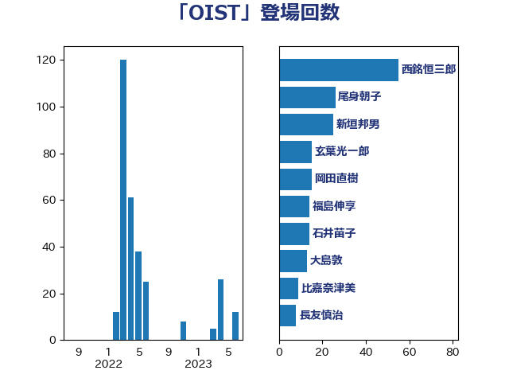

単語「OIST」

| 西銘恒三郎 | 自由民主党 | 55 回 |
| 尾身朝子 | 自由民主党 | 26 回 |
| 新垣邦男 | 立憲民主党 | 25 回 |
| 玄葉光一郎 | 立憲民主党 | 15 回 |
| 岡田直樹 | 自由民主党 | 15 回 |
| 福島伸享 | 無所属 | 14 回 |
| 石井苗子 | 日本維新の会 | 14 回 |
| 大島敦 | 立憲民主党 | 13 回 |
| 比嘉奈津美 | 自由民主党 | 9 回 |
| 長友慎治 | 国民民主党 | 8 回 |
| 荒井優 | 立憲民主党 | 6 回 |
| 空本誠喜 | 日本維新の会 | 6 回 |
| 橘慶一郎 | 自由民主党 | 6 回 |
| 清水貴之 | 日本維新の会 | 5 回 |
| 金城泰邦 | 公明党 | 4 回 |
| 馬場雄基 | 立憲民主党 | 3 回 |
| 進藤金日子 | 自由民主党 | 2 回 |
| 若松謙維 | 公明党 | 2 回 |
| 國重徹 | 公明党 | 2 回 |
| 勝部賢志 | 立憲民主党 | 2 回 |
| 黄川田仁志 | 自由民主党 | 1 回 |
| 高橋千鶴子 | 日本共産党 | 1 回 |
| 神谷裕 | 立憲民主党 | 1 回 |
| 猪口邦子 | 自由民主党 | 1 回 |
| 岸田文雄 | 自由民主党 | 1 回 |
| 山岸一生 | 立憲民主党 | 1 回 |
| 小林鷹之 | 自由民主党 | 1 回 |
| 奥下剛光 | 日本維新の会 | 1 回 |
| 和田義明 | 自由民主党 | 1 回 |
| ながえ孝子 | 無所属 | 1 回 |